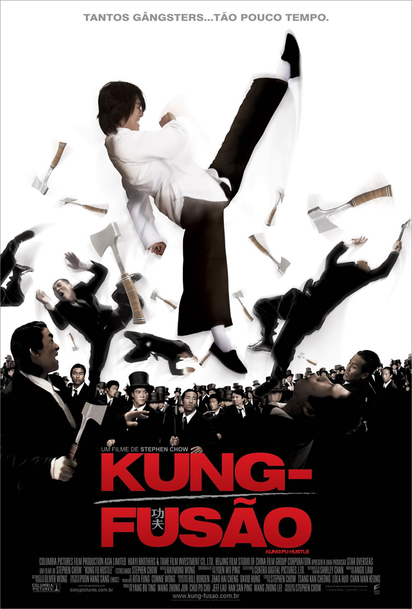

|  | Kung-Fusão
Direção: Stephen Chow
Roteiro Kan-Cheung Tsang, Stephen Chow
Elenco: Stephen Chow, Yuen Qiu, Leung Siu Lung
1940. Sing (Stephen Chow) é um ladrão de segunda categoria que sonha em integrar a sofisticada e implacável gangue Axe, que controla o submundo da cidade. Ele tenta extorquir dinheiro de um dos moradores do Beco Curral do Porco, um movimentado complexo de apartamentos da periferia, mas é surpreendido pelos vizinhos da vítima, mestres nas artes marciais. As tentativas trapalhadas de Sing chamam a atenção da gangue Axe, que entra em conflito com os moradores do Beco. |
|
Acesse mais em YouTube SESSÕES
|